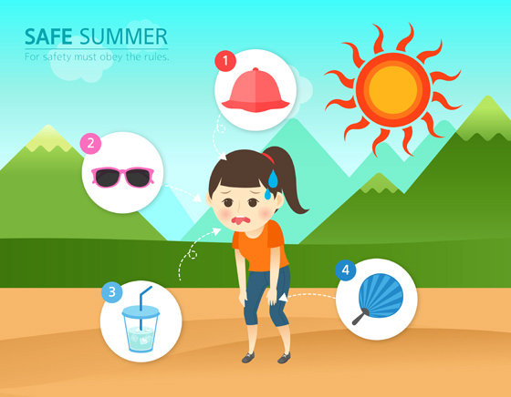

폭염

폭염이란?
폭염이란 인간이 의도하지 않은, 또는 고의로 불을 낸 것을 의미하며, 소화시설을 이용해 끌 필요가 있는 화학적인 폭발현상
1.사전준비
1.여름철에는 항상 기상상황에 주목하며
2.열사병 등
3.
4.단수에 대비하여
5.
주변 사람들과 함
께 정보를 공유합니다.2.열사병 등
온열질환의 증상과 가까운 병원 연락처
등을 가족이나 이웃과 함께사전에 파악
하고 어떻게 조치해야 하는지를 알아둡니다.3.
에어컨, 선풍기
등을 사용할 수 있도록 사전에 정비합니다.4.단수에 대비하여
생수를 준비
하고,생활용수는 욕조에
미리 받아 둡니다.5.
정전에 대비
하여 손전등, 비상 식음료, 부채, 휴대용 라디오 등을 미리 확인해 둡니다.
2.폭염 예보 시
1.집안 창문에 직사광선을 차단할 수 있도록
2.외출하는 경우를 대비하여 창이 긴 모자, 햇빛 가리개, 썬크림 등
3.오래된 주택은
커튼이나 천, 필름 등을 설치
합니다.2.외출하는 경우를 대비하여 창이 긴 모자, 햇빛 가리개, 썬크림 등
차단제를 준비
합니다.3.오래된 주택은
변압기를 사전에 점검
하여 과부하에 대비합니다.
3.폭염 발생 시
1.
2.냉방이 되지 않는 실내에서는
3.휴식시간은 장시간 한 번에 쉬기보다는
4.야외 행사, 스포츠경기 등
물을 많이
마시고, 카페인이 들어간 음료나 주류는 마시지 않습니다.2.냉방이 되지 않는 실내에서는
햇볕
을 가리고맞바람이 불도록
환기를 합니다.3.휴식시간은 장시간 한 번에 쉬기보다는
짧게 자주
갖는 것이 좋습니다.4.야외 행사, 스포츠경기 등
각종 외부 행사를 자제
합니다.